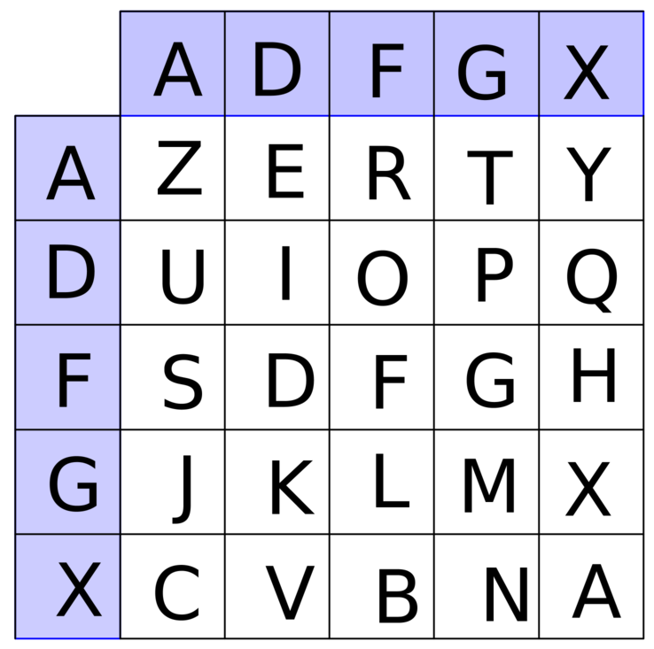
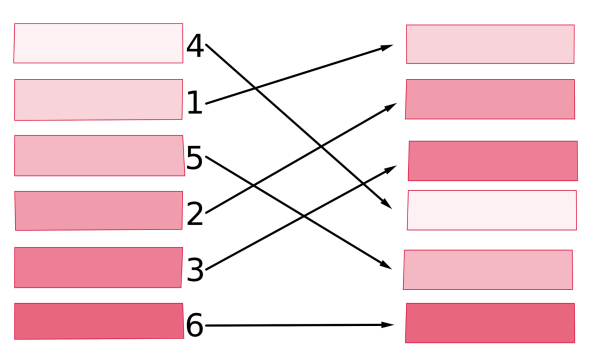
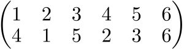
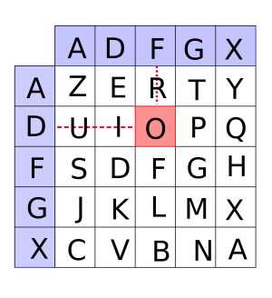
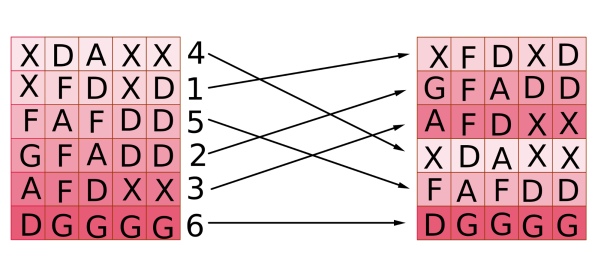

Après avoir déchiffré le message du tour précédent, votre amie Alice a trouvé un nouveau message, chiffré différemment. Allez lire la bande dessinée de la suite de son aventure quand vous avez un peu de temps.
Voici le texte du message :
{{ texte du message }}Votre but est de l'aider à déchiffrer ce texte. Vous devez y trouver le nom d'une ville et trois noms de métaux.
Comme pour le tour précédent, vous disposez d'outils pour vous aider et pouvez obtenir des indices.
Il n'y a plus d'entraînement cette fois, mais vous pouvez effectuer autant de tentatives en temps limité que vous le souhaitez. Pour chaque tentative, vous disposez d'1h30 pour tenter de déchiffrer le message en utilisant le moins d'indices possible.
Comme pour le tour précédent, votre score sera le meilleur score parmi toutes vos tentatives en temps limité.
Votre amie a reconnu la méthode utilisée pour chiffrer le message. Il s'agit du chiffrement ADFGX. Vous ne disposez pas de la clé.
Pour chiffrer et déchiffrer un message avec la méthode ADFGX on doit se munir :
d'une grille secrète (la clé-grille) : on place toutes les lettres de l'alphabet sauf W dans une grille 5x5 pour laquelle les lignes et les colonnes portent des étiquettes A, D, F, G et X, par exemple :

d'une permutation secrète (la clé-permutation) : en mathématiques une permutation de taille n est une façon de réordonner n objets. Voici un exemple de permutation de taille 6 :

Cette permutation est notée en mathématiques :

En informatique, on la note [4,1,5,2,3,6]. Nous utiliserons la notation informatique dans les outils.
Voici les étapes successives du chiffrement, que nous allons illustrer sur le message «à Georges Painvin !» :
Le message est converti en majuscules et les accents retirés. Les espaces et les signes de ponctuation sont supprimés. Tous les W sont remplacés par des V.
Notre message devient : «AGEORGESPAINVIN»
On s'assure que le message a bien un nombre de lettres multiple de 3 en ajoutant des lettres à la fin si nécessaire. Dans cette épreuve le message aura toujours un nombre de lettres multiple de 3.
Notre message reste «AGEORGESPAINVIN»
On cherche chaque lettre du message dans la grille et on la remplace par deux lettres : l'étiquette de sa ligne puis l'étiquette de sa colonne dans la grille.
Par exemple, dans la grille ci-dessous O est chiffré par DF :

En appliquant cette procédure sur toutes les lettres de notre message «AGEORGESPAINVIN», il devient «XXFGADDFAFFGADFADGXXDDXGXDDDXG». On appelle ce nouveau texte le message intermédiaire.
On écrit les lettres du message intermédiaire, qui sont uniquement des A, D, F, G et X sur six lignes comme ci-dessous : XXFGAD va sur la première colonne, DFAFFG sur la deuxième et ainsi de suite.
X D A X X
X F D X D
F A F D D
G F A D D
A F D X X
D G G G G
On applique notre permutation en l'inscrivant sur le côté des lignes à gauche, puis en triant les lignes selon ces valeurs. Ainsi pour la permutation [4, 1, 5, 2, 3 6], la 1ère ligne va à la 4e position, la ligne 2 va à la 1ère position, la ligne 3 à la 5e position, la 4e à la 2e position et la 5e à la 3e position, tandis que la 6e reste sur place

On lit ensuite le message ligne par ligne dans la grille obtenue, à droite.
Dans notre exemple on lit donc la 1e ligne XFDXD, puis GFADD, AFDXX, XDAXX, FAFDD et enfin DGGGG, ce qui donne le message chiffré : «XFDXDGFADDAFDXXXDAXXFAFDDDGGGG».
Pour déchiffrer un message chiffré par ADFGX lorsque l'on dispose de la clé, il faut effectuer les étapes inverses :
découper le message en 6 lignes de longueur égale ;
permuter les lignes en appliquant la permutation inverse de celle utilisée pour chiffrer. Par exemple la permutation inverse de [4,1,5,2,3,6] est [2,4,5,1,3,6] ;
lire le texte colonne par colonne, ce qui donne le texte intermédiaire ;
déchiffrer chaque paire de lettres du texte intermédiaire en utilisant la grille. Par exemple DF donne O dans notre exemple.